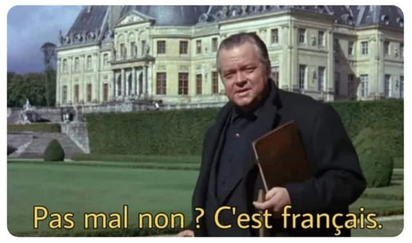

Croque Monsieur Review
Thoughts
Not something I thought I'd enjoy because I'm usually not a fan of creams/sauces. But my Auntie is a great cuisiner and her croque monsieur are delicious.
Croque Monsieur have a sandwhich like shape which I'm keen of.
Feel like this is something Garfield would love instead of lasagna, in a parallel universe.
Just realising it translates into man crunch. Why, What does it mean? Who came up with that?
Rankings

- Aunties
- Nothing_even_close
- Nothing_even_close
- Nothing_even_close
- Nothing_even_close